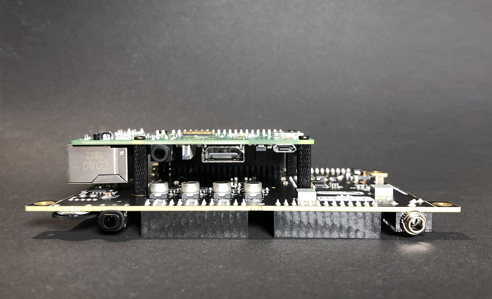

Elk Pi Hardware¶
Get Started with the Elk Pi Hardware.
This document contains basic information on how to set up Elk Pi development boards.
Each board ships with 4 short spacers, 4 long spacers, the optional bottom plate and screws.
1. Assembly¶
We have created a brief time-lapse video of the assembly process you may want to refer to, illustrating the steps below.
While we do not provide a heat sink for your RPi, we do recommend that you use one, at the very least for the CPU. Attach heat sink(s) first, by peeling off the blue protective film from the bottom and applying it on top of the Raspberry Pi CPU, along with eventual additional heat sinks for network and Bluetooth chips.

Mount the four short spacers onto the Raspberry Pi using the included screws:

Plug the Hat on top of the Raspberry Pi:

Add another four of the included screws to the holes illustrated below, if you want extra stability:

Finally, if you want you can add the optional bottom plate, using the included long spacers and screws. The final assembly then appears as follows:

2. Flashing the Elk operating system image to the SD card¶
To get the system running, you need to flash an Elk operating system image onto an SD card and plug it into the Raspberry Pi. The minimum required SD card size is 8GB.
- Download the compressed image from the provided link. It will have a filename such as: elk-sika-image-dev-raspberrypi3-64.wic.bz2.
- Connect the empty SD card to a computer. If you do not have a computer with an SD/Micro-SD card reader, you will need a USB adapter.
Windows:¶
- Extract the .wic file from the .bz2 archive using 7Zip or another compression utility.
- Download and install balenaEtcher, or Win32DiskImager.
- Flash the extracted *.wic file to the SD card.
Linux:¶
At your convenience, you can either use balenaEtcher, or use plain dd with these instructions:
- Find out under what name your SD card is listed on your computer, using e.g. lsblk -f. On modern Linux distributions it usually is /dev/sdb, /dev/sdc, or subsequent letters, or sometimes /dev/mmcblk0. We will from now on refer to it as /dev/sdX.
- Unmount the SD card if it was already mounted:
$ sudo umount /dev/sdX*
- VERY IMPORTANT: double-check that you are using the correct device with dd! Otherwise you could risk wiping out another disk on your machine! To uncompress and flash onto the SD card run:
$ bzcat elk-sika-image-dev-raspberrypi3-64.wic.bz2 | sudo dd of=/dev/sdX bs=4M status=progress && sync
The process can take a few minutes, so this is a good time to stretch your legs.
If for any reason the process fails, just reduce the bs=4M speed to bs=1M for example, and it should work great.
macOS:¶
Also here you can flash the image using balenaEtcher, using Unarchiver to extract the .bz2 file first.
3. Power up, and next steps¶
- Put the SD card in the corresponding slot on the Raspberry Pi.
- Connect the power supply Micro-USB cable to the Raspberry Pi - it will boot into Linux.
From here on, the steps for connecting, and getting sound output, are the same for all our boards. These are detailed in Run Elk on Boards.